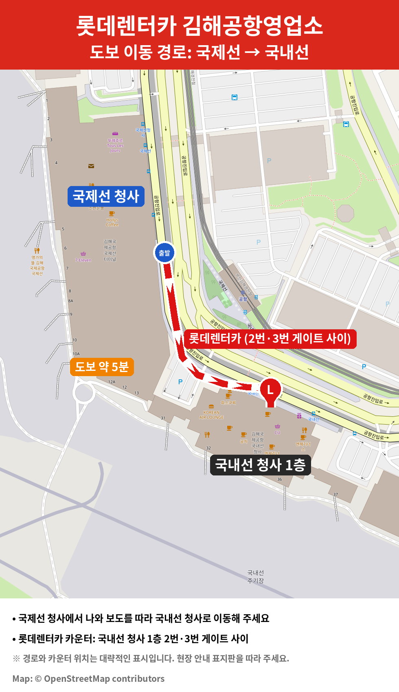

김해공항 픽업 안내
김해공항영업소 · 대여 전 안내

1픽업 위치
국내선 청사 1층 (도착층)
카운터는 2번 게이트와 3번 게이트 사이에 있습니다.
국제선 청사에서 도보 약 5분 거리입니다.
2준비물
- 운전면허증 실물을 꼭 지참해 주세요.
- 모바일 운전면허증(휴대전화 인증 면허증)도 사용 가능합니다.
문의: 김해공항영업소
✉️ 534046@lotte.net
💬 채팅 상담운영시간 오전 8시~오후 9시

국내선 청사 1층 (도착층)
카운터는 2번 게이트와 3번 게이트 사이에 있습니다.
국제선 청사에서 도보 약 5분 거리입니다.